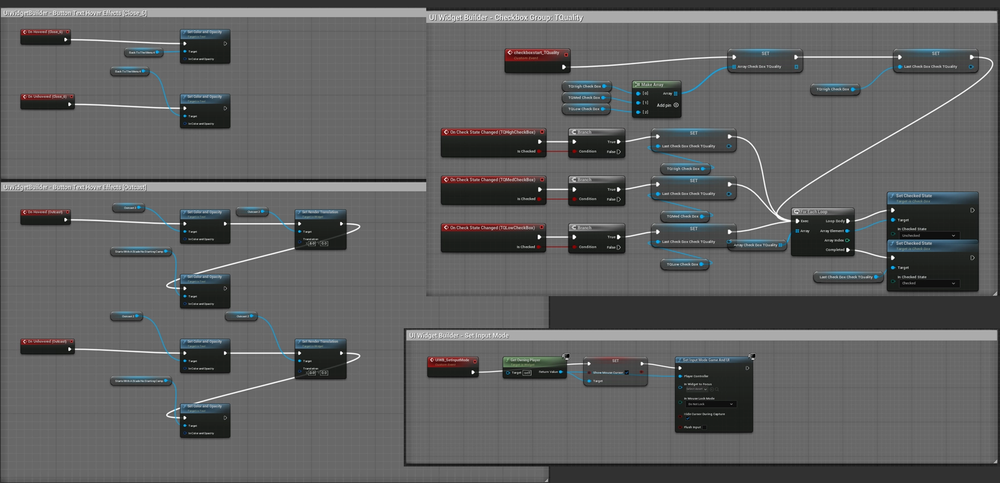

Auto-Generated Logic
Menus, Switchers, Events
A practical reference for generated Blueprint logic: sibling menu matching, WidgetSwitcher tabs, close/show flow, volume sliders, video, timers, blinking, progress, and auto-scroll.
What the importer can generate automatically
The importer can generate several Blueprint graph systems. Some are complete runtime helpers, while some are clean helper sections designed to give users a practical starting point for project-specific Blueprint work.

Automatic button target matching
When a button does not have an explicit interaction target, the importer builds a visibility-target map from the JSON and tries to match button names to screen/group names.
| Example | Matched target | Generated behavior |
|---|---|---|
BTN_Settings |
CAN_Settings / GRP_Settings / PNL_Settings |
OnClicked can toggle or show the matching target widget. |
BTN_Quit |
CAN_QuitWindow or GRP_Quit |
Useful for sibling popup menus such as Quit, Settings, Character Select. |
BTN_Start |
Not another BTN_Start |
Button groups are excluded as automatic visibility targets to prevent self-toggle mistakes. |
The source prioritizes targets in this order: CAN_ / screen first, then GRP_, then unprefixed containers, then PNL_. This helps BTN_Settings choose a real screen before a decorative panel.
Tabs, switchers, and Common Animated Switcher
| Feature | Generated result | Restriction |
|---|---|---|
switchTab button metadata |
OnClicked → SetActiveWidgetIndex on the target WidgetSwitcher. |
The button must target a direct page/child of a WSW_ / WIS_ switcher in the exporter data. |
| WidgetSwitcher active index helpers | Custom events named like UIWB_Switcher_SetIndex_0. |
Generated only for detected switcher/page data. |
| Change to Common Animated Switcher | Creates the switcher as CommonUI's CommonAnimatedSwitcher / UCommonAnimatedSwitcher when available. |
Requires the Unreal CommonUI plugin and is for UE 5.7 / UE 5.8. UE 5.6 keeps normal WidgetSwitcher behavior. |
Close On Key and Show After Close
| Option | Generated logic | Caution |
|---|---|---|
| Close on the Key | Creates close-key logic for the selected root and hides it after the close flow. | Use specific keys when possible. Any Key can close on broad keyboard/gamepad input. |
| Show After Close | Shows another root after the current root closes. | The target list filters invalid roots and excludes the current root. |
| Detached target | Creates the detached widget and adds it to the viewport. | Detached roots must be imported and have a valid generated WBP name. |
| Pause Game When Visible | Generates pause/unpause helper events for the root. | Test carefully with menus that also use level transitions. |
Generated button events
| Option / pattern | Generated result |
|---|---|
| Add Click SFX | Adds a click event helper chain and click sound helper logic. |
| Add Hover SFX | Generates an OnHovered event and sound helper logic. |
| Button-child text hover options | Generates hover/unhover events for child TextBlocks. Supported options include flipped color on hover, center scale on hover, and move-to-right on hover. |
| Close Parent Screen | OnClicked closes/hides the parent screen target. |
| Enable/Visible widget | OnClicked sets a selected root visible and enabled. |
| Load Level On Click | Generates an Open Level by Name node chain. |
| Create Widget By Click/Touch | Generates OnClicked logic that creates the selected widget class and adds it to the viewport. |
BTN_Exit / quit style flow |
Can generate a QuitGame node path depending on the imported action data/settings. |
Other generated graph systems
| System | Generated result | Notes |
|---|---|---|
| CHKG_ checkbox group | Creates checkbox array, initializes the first checkbox as the default checked item, and tracks LastCheckBoxCheck for mutual exclusion. | Needs at least two checkbox/toggle members. Text labels under the group are set to remove hit test so they do not block checkbox clicks. |
| Volume sliders | Generates OnValueChanged helper graph for Master/SFX/Music volume sliders. | Project sound classes/mixes may need manual assignment. |
| Editable text | Clear text helper event, OnTextCommitted Submit On Enter path, empty validation branch, password flag for text boxes. | Clear-on-focus is provided as a helper event; verify final focus behavior in your project. |
| Image Play Video | Creates a MediaPlayer variable and PlayVideo helper graph for the selected image. | User should assign the MediaPlayer asset manually in the generated widget. |
| Text TimeCounter | Creates a counter variable, Tick-driven update path, converts time to text, and updates a TextBlock. | One generated counter variable per selected TextBlock. |
| Blinking Effect | Uses real time seconds and SetRenderOpacity to pulse a selected text/image widget. | Generated only for supported selected elements. |
| ProgressBar FillBar | Creates a percent variable and runtime update graph for SetPercent. | Use the generated variable as the driving value. |
| ScrollBox Auto Scroll | Generates auto-scroll logic with looping reset behavior. | Best for credits, menus, or auto-moving lists. |
Add Widget To Current Level
Level Blueprint BeginPlay
→ UIWB_ADD_TO_LEVEL
→ CreateWidget(selected WBP)
→ AddToViewport
→ PlaySound2D(selected music, if enabled)The generated Level Blueprint path depends on the currently open editor level. Check the Level Blueprint after import if the widget does not appear in PIE.